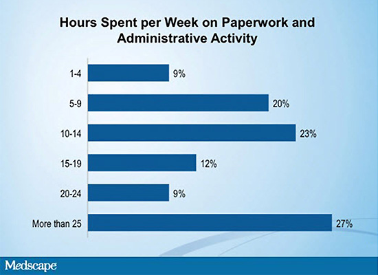

Вторая часть опроса врачей-инфекционистов в США посвящена вопросам рабочего времени и жизни вне офиса.
Рабочее время
Более чем четверть опрошенных врачей-инфекционистов (28%) принимают пациентов, в среднем, менее 30 ч в неделю, 22% тратят на работу с пациентами 30-40 ч в неделю. Около 16% работают 51-65 ч в неделю и только 9% проводят на работе и непосредственно «тратят» на пациентов более 65 ч в неделю.
Если рассматривать аспект загруженности пациентами врача-инфекциониста, то, учитывая (по сравнению с врачами других специальностей) относительно меньший поток пациентов, врач-инфекционист тратит больше времени на каждого пациента. Так, 22% респондентов сообщили, что у них уходит, в среднем, более 25 минут на визит одного пациента, 40% тратят 17-24 минуты и только 4% отметили, что у них уходит на одного пациента менее 9 минут за визит. Аналогичные данные по распределению времени были получены и при проведении опроса в прошлом году.
Не было неожиданностью, что врачи-инфекционисты тратят больше времени на каждого пациента. Так, приём пациента с ВИЧ-инфекцией, например, часто является весьма сложной задачей, и перед врачом нередко стоят диагностические и лечебные дилеммы, что, соответственно, требует больше времени для решения.
Дополнительно к непосредственной работе с пациентом увеличивается количество часов, затрачиваемых на работу с документами и административные моменты (рисунок 3).
Рисунок 3. Количество часов в неделю, затрачиваемых врачами-инфекционистами на работу с документами и административные моменты

Более чем 1/4 часть (27%) опрошенных врачей-инфекционистов утверждают, что они тратят более 25 ч в неделю на бумажную и административную работу. Данный показатель увеличился в 2 раза по сравнению с прошлогодним опросом, когда только 13% врачей отмечали, что тратят на данные аспекты деятельности более 25 ч в неделю.
Жизнь вне офиса
Помимо профессиональной деятельности в ходе проведённого опроса врачам задавались вопросы об их жизни вне клиники или стационара, например, как часто они занимаются спортом и куда они ездят отдыхать.
Ощущение счастья
На опрос «Счастливы ли Вы» врачи-инфекционисты отвечали так же, как их коллеги других специальностей — обычно 4 балла из 5 возможных при оценке по «Шкале субъективного счастья и удовлетворённости жизнью». Однако по сравнению с прошлым годом врачи были менее удовлетворены своим положением, и, как результат, менее счастливы. Врачи всех специальностей отметили большее количество срывов планов, надежд, чувство разочарованности по сравнению с данными предыдущего опроса. На вопрос «Выбрали ли бы они медицинскую специальность и карьеру в медицине, если бы это предстояло им сделать снова» 63% врачей-инфекционистов ответили, что выбрали бы карьеру в медицине, но только 45% выбрали бы эту же специальность врача-инфекциониста. В прошлом году 73% врачей, практикующихся в настоящее время в области инфекционных болезней, выбрали бы ту же специальность, если бы судьба дала им второй шанс. Но на уровень удовлетворённости профессией, вероятно, влияет много факторов, поэтому сложно сказать, с чем связаны такие ответы.
Работа на добровольной основе является ещё одним моментом, отличающим врача-инфекциониста от врачей других специальностей. Врачи-инфекционисты более часто вовлекаются в волонтерскую работу, включая активность на благо общества в клинике, международную миссионерскую медицинскую деятельность, а также в наставничество и консультативную активность. Только 27% врачей-инфекционистов не выполняли волонтерскую работу (в сравнении данный показатель у врачей других специальностей составил, в среднем, 34%).
Большая тенденция к волонтерской работе среди врачей-инфекционистов является отражением работы с определёнными категориями пациентов, которых, как правило, наблюдают врачи данной специальности —- это пациенты с ВИЧ-инфекцией, туберкулёзом, вирусными гепатитами, заболеваниями, передаваемыми половым путём, т.е. это не всегда социально адаптированная прослойка пациентов, нередко это малоимущие граждане. Врачам-инфекционистам нередко приходится работать в отделениях с ограниченным финансированием, что связано с особенностями медицинского обслуживания такого рода пациентов.
ID Docs: Money, Lifestyle, and Politics
Medscape